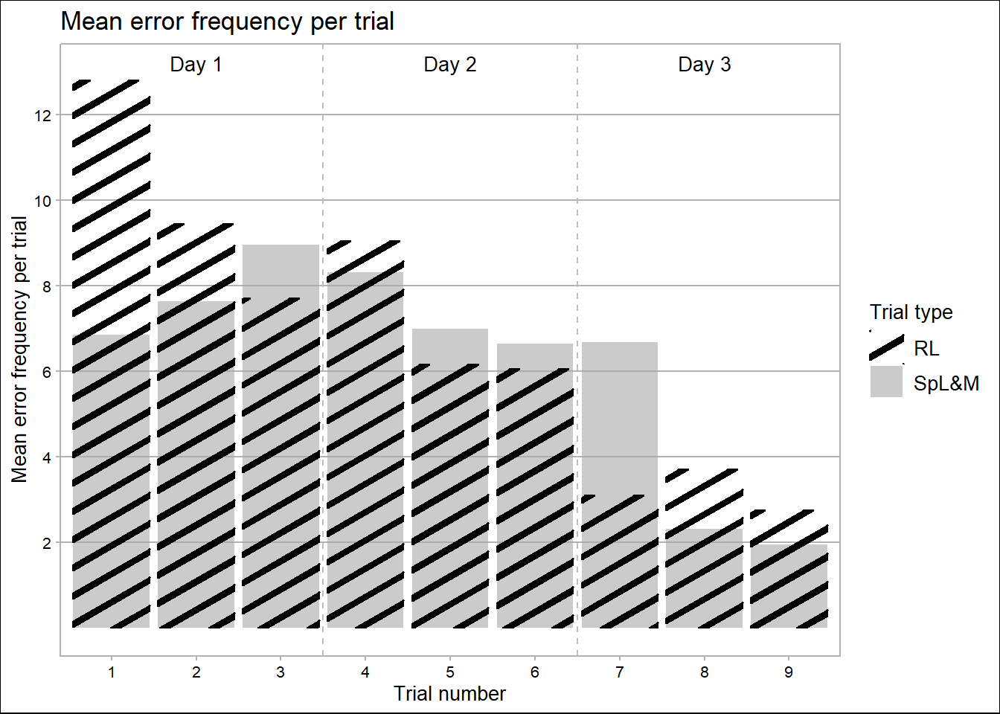
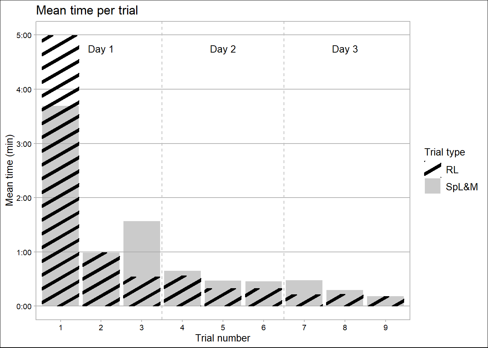
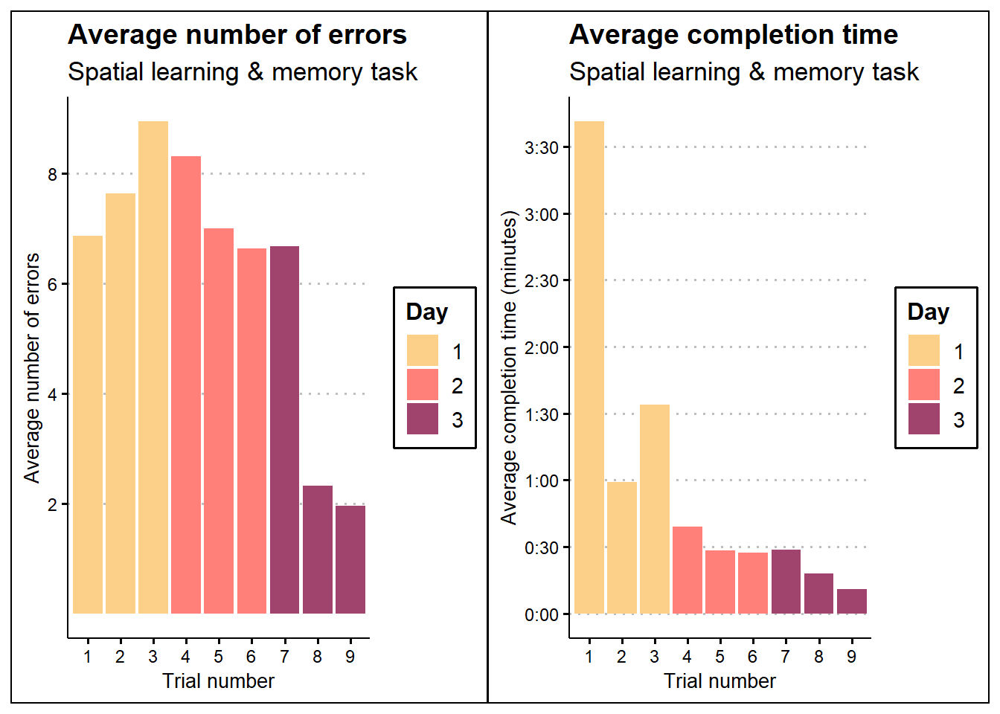
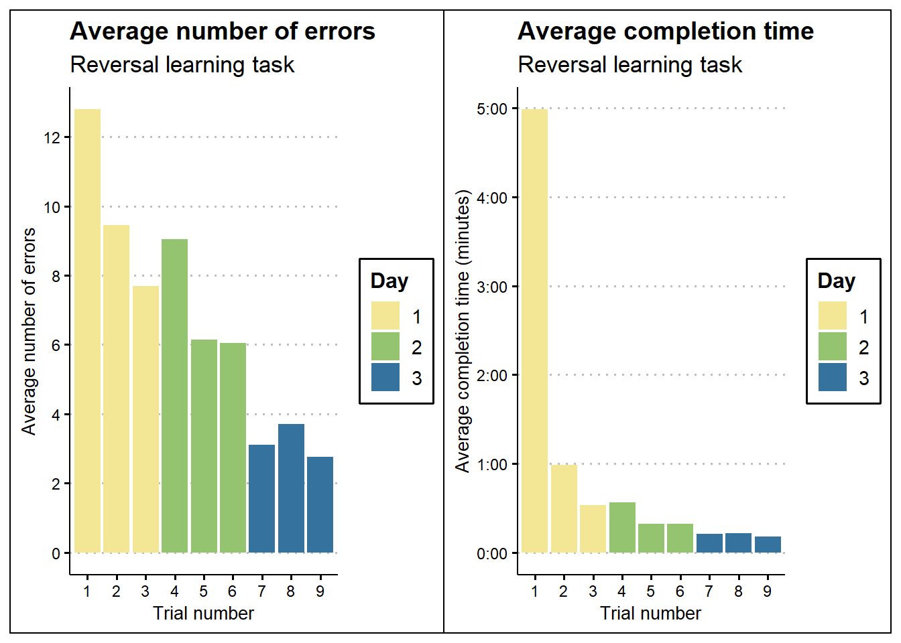

cogn
Tiny bodies, big brains:
Spatial cognition-based learning and memory in black-capped chickadees
How long does it take a chickadee, one of North America’s most beloved backyard birds, to learn a spatial cognitive task?
Summary
Somewhat like squirrels, black-capped chickadees are a food-caching species that relies on memory of its cache locations to survive harsh winters. This remarkable memory capacity is useful to study to understand avian ecology. We studied spatial learning (the ability of an individual to recognize and recall important information about the relative position of items in space) and reversal learning (the ability of the individual to update its own knowledge and behaviour when reward stimuli is changed) in a total of 22 black-capped chickadees.
Each trial involves placing a “reward” (a mealworm) in one of 30 cache sites in the cognitive behavioural testing room. We record the amount of time and number of “errors” (non-reward sites visited) made per individual before the reward site is reached, and the same reward site is used each time. After spatial learning and memory testing, we switch the location of the reward site to test reversal learning ability.
We found that the average number of errors per trial stayed relatively consistent around 7 per trial until day 3, where it dipped closer to 2; however, the time it took to reach the reward decreased significantly after the first trial. Reversal learning had a slow decrease that appears to be marked by the trial day, but the number of seconds to reach the reward similarly decreased rapidly. Overall, the number of errors made per trial decreased more slowly than average completion time across both tests.
Version A: Scientific Article
Introduction
Black-capped chickadees (Poecile atricapillus) are food-caching birds that rely on spatial cognition to survive harsh winters. Thus, it is adaptive for individuals to have larger hippocampi with greater spatial reasoning and memory skills. In this study, we investigated spatial cognition in chickadees using spatial learning and memory (SpL&M) tasks and cognitive adaptability using reversal learning (RL) tasks in order to learn how much exposure is needed for chickadees to commit cache locations to memory. Measuring these skills will provide valuable insight into the lives of chickadees and their evolutionary strategies.
Methods
We captured our sample of black-capped chickadees (n = 22) in the field in London, Ontario. Each individual was tested with 9 trials over 3 days (3 trials per day) for the SpL&M task, followed by the same for the RL task. Before testing, each bird underwent shaping, where they were “trained” to be familiar with and to use the cognitive behavioural room to recover “caches.”
For the SpL&M task, each individual was placed into the cognitive behavioural room containing a faux tree with 30 “cache sites.” One of these was designated as the reward site, which contained a food reward, and the rest were empty. We recorded the location and order of all sites each bird visited as well as the time it took to find the reward site. Each trial for the SpL&M task repeated the reward location. The RL task was the same as the SpL&M task, except that it ran afterwards and had a different reward site, forcing individuals to relearn the reward location.
Results
Table 1 shows the average number of stops made at non-reward sites per trial for the RL and SpL&M tasks. Contrary to expectation, error quantity increased slightly across the three trials on day 1, before decreasing again at small intervals throughout day 2. As expected, the last two trials on day 3 had the lowest number of errors at approximately 2 per trial. Similarly, the number of errors for the RL task decreased over time. There is a difference of approximately 6 errors between the SpL&M task and the RL task, which could be because the locations of sites visited during the first SpL&M task is likely to be random, while sites visited during the first RL trial are not, as chickadees continue to act along their SpL&M-task information framework.
Table 1.
Table 2 shows the average completion time per trial in minutes for both trial types. For both the SpL&M and RL tests, time started high and decreased quickly after. There is little difference in values of each test type, aside from the first trial and an unexplained increase in SpL&M during trial 3; more information is needed to learn why time is less variable than trial number.
Table 2.

Comparing the trends in error frequency and time per trial, one can note that error frequency decreases more slowly than time. It may be that chickadees prioritize speed of cache recovery over accuracy. It is also possible that the rapid decrease in time taken to retrieve the cache is due to increasing acclimatization to the trial setup and mechanisms, but not due to rapid memorization of reward locations. In this situation, the number of errors would be more representative of memory, and the time measure would be representative of a function of memory and acclimatization.
Nonetheless, the data shows that 8 trials over 3 days tends to be sufficient to commit a reward location to a chickadee’s memory within ~2 error locations, and 3 trials over one day tends to be sufficient to allow a chickadee to recover a reward location within ~30 seconds, regardless of number of errors.
Version B: Accessible Outlet
Chickadees might just be the tiniest bird at your feeder every year. But smart?
Black-capped chickadees (Poecile atricapillus) are tiny but mighty little birds—cognitively, that is. As food-caching birds, they rely on their memory to recover all the food they hid away throughout the year to survive a long, cold winter when resources are slim. They are able to remember tens of thousands of cache sites based on location, and that requires a lot of brainpower.
To investigate the mental fortitude of black-capped chickadees, we put them to the test in a series of spatial learning and memory (SpL&M) and reversal learning (RL) trials. During 9 trials over 3 days, each chickadee (out of 22 total) was presented with a faux tree with 30 “cache sites”—one containing a reward, and 29 empty. We measured the amount of time it took for each chickadee to find the reward and the number of caches it checked beforehand (“errors”). Following that, chickadees went through the whole process again—but with a new reward site, to test their cognitive flexibility—how easily they could change their behaviours upon learning that their old knowledge set was no longer correct.

For the spatial learning task, chickadees typically made more errors as the trials went on in day 1. but by the second and third trials of day 3, they had gotten it down to an average of around 2 errors per trial. Interestingly, though, the amount of time it took to find the reward decreased much more drastically; after an initial spike in day 1 as chickadees completed the trial for the first time, the average completion time was generally around or under 30 seconds throughout days 2 and 3. This suggests that after the first day, chickadees were quick to check many sites, but still had to make many stops to find the reward. This is possibly because the birds were still getting used to the structure of the trials.

After the chickadees had worked to commit the reward locations to memory, the reversal learning trials began, and the birds had to unlearn everything. The results are similar to that of the spatial learning & memory task—the number of errors decreased slowly, and completion time decreased rapidly—but the pattern is more distinct here. One might expect that chickadees would struggle a bit more to challenge and change previously-held assumptions and knowledge about the world. It seems that chickadees are fairly quick at revising their knowledge about spatial information, and this is likely a great boon to their survival. (Or the chickadees just got better at the trials presented to them—more research is needed to come to a substantive conclusion.)
It is notable that both datasets show that on the 3rd day around the 8th and 9th trial, the average number of errors drops to ~2. Perhaps this indicates the minimum number of errors typical for chickadee cognition and the amount of exposure to the stimulus necessary to achieve this. It could also be true that with continued trials, the number would continue to decrease.
Dataset Source
Cognitive_Performance_Comprehensive.csv Samuel Jung, gjung7@uwo.ca Courtesy of the Branch Lab Advanced Facility for Avian Research University of Western Ontario 32 Wellington Dr, London, ON N6G 4W4, Canada